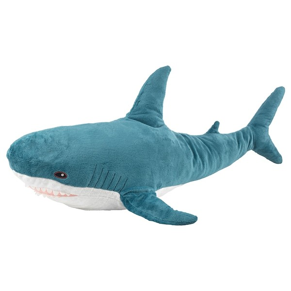
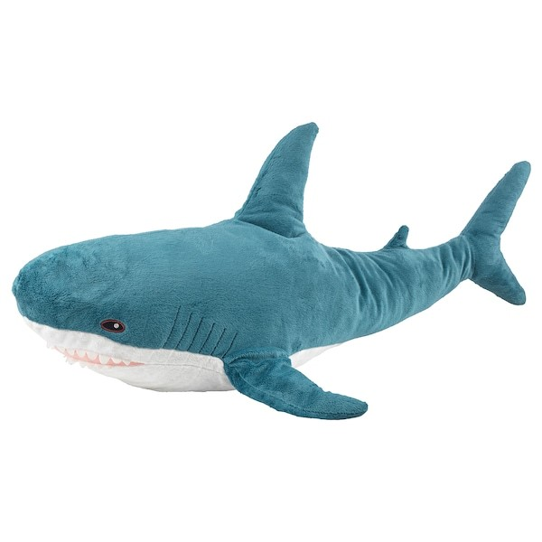

POPKEA: ORIGAMI
 

鲨鱼凳的主体是一只绑在架子上的宜家鲨鱼，而且木制架子底部装有轮子，可以自由移动。使用者可以骑在鲨鱼凳上快乐地自由移动，感受到如同鲨鱼一般在海洋中自由畅行的快感。
然而鲨鱼凳的背后也隐藏着深深的寓意，鲨鱼凳的鱼鳍少了一只，露出红色的伤口，同时鲨鱼被用绷带和麻绳紧紧捆绑在架子上，这一切都在引人深思。
The main body of the shark stool is an Ikea shark tied to a shelf, and the wooden shelf is equipped with wheels at the bottom, which can move freely. The user can move freely and happily on the shark stool and feel the pleasure of walking freely in the ocean like a shark.
However, there is also a deep meaning behind the shark stool. One fin of the shark stool is missing, revealing a red wound. At the same time, the shark is tightly tied to the shelf with bandage and hemp rope, which is all thought-provoking.